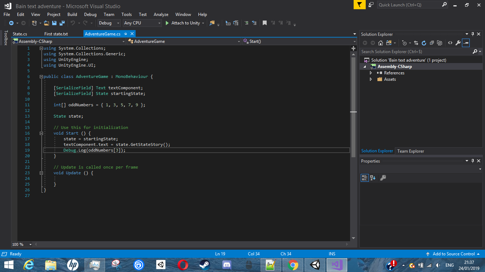

_
_
_
Wat heb je allemaal nodig?
1: Een Udemy account.
2: De cursus "Complete C# Unity Developer 2D: Learn to Code Making Games".
3: Unity Hub
4: De meest recente versie van de Unity engine.
5: Weten hoe je tewerk gaat met de codeer taal C#.
6: 2D sprites voor je achtergrond, voorgrond, charachter, enemies, wapens en bosses.
_
 
_
_
_
_
_
_
_
_
_
Het uiteindelijke doel van mijn GIP is om een 2D shooter/dungeon explorer game met een top-down view te maken.
De dungeon in de game zal 3 verdiepingen hebben met elk 50 willekeurige kamers en 1 boss kamer.
Er zijn in totaal 3 bosses elk van die bosses dropt een stuk van een sleutel die nodig is om te ontsnappen uit de dungeon.
De camera die de speler volg staat statis gefocised op he midden van de kamer waarin de speler zich bevindt. De camera gaat mee met de speler als de speler naar een nieuwe kamer gaat.
_
Elke kamer heeft 4 deuren behalve de kamers op de zijkanten en hoeken van de map.
De speler heeft 1 leven en elke checkpoint is in het begin van de verdieping.
De eerste boss heeft 1500 hp, de tweede heeft 2000 hp en de derde 3000 hp.
Elke enemy en boss heeft enkel lange afstan aanvallen die de speler moet ontwijken om te overleven.
De enemies op de eerste verdieping hebben 100-175 hp, op de tweede verdieping 175-250 hp en op het derde verdiep 300-400hp
Het wapen dat de speler gebruikt wordt geüpgraded met elke boss dat de speler verslaat.
In het begin doet het wapen van de speler 25 damage, op het tweede verdiep 35 damage en op het derde verdiep 50 damage.
Het naam van mijn spel is Deezer's Dungeon.
_
Momenteel leer ik hoe ik tewerk moet gaan met C# en de Unity engine met behulp van de cursus op Udemy.